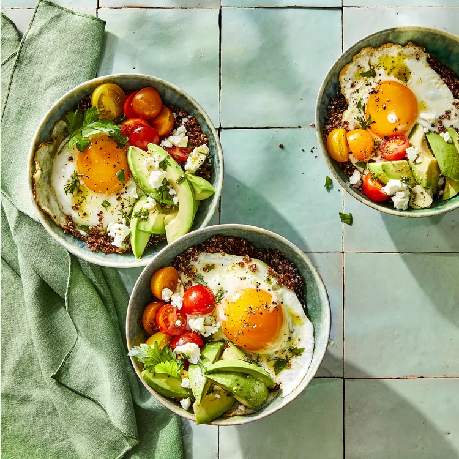

Avocado Breakfast Bowl

Description
Heart health and protein in a bowl! This recipe is an unexpected kick of flavor with egg, red quinoa, avocado, and feta cheese! Very easy to make and a delicious start to the day.
Ingredients
- 1/2 cup water
- 1/4 cup red quinoa
- 1 1/2 teaspoon olive oil
- 2 eggs
- 1 pinch salt and ground black pepper to taste
- 1/4 teaspoon seasoned salt
- 1/4 teaspoon ground black pepper
- 1 avocado, diced
- 2 tablespoons crumbled feta cheese